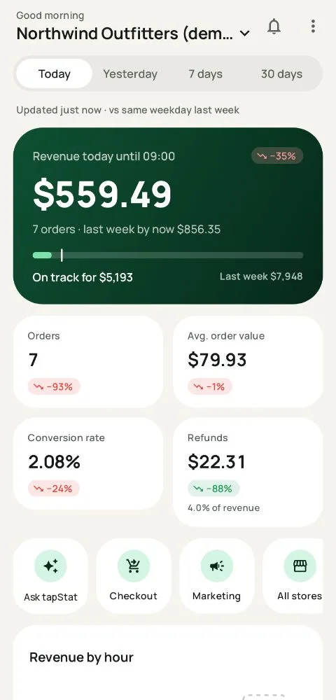

tapStat · Comparisons
The best Google Analytics apps in 2026
Most "best Google Analytics apps" lists were written for Universal Analytics, which Google switched off in 2023 and 2024. Many of the apps on them no longer work. These are the options that work with GA4 today, and who each one is for.
At a glance
| App | Best for | Platforms | Price |
|---|---|---|---|
| Google Analytics (official) | Every type of GA4 property, the full report library | Android, iPhone | Free |
| tapStat | Online stores: revenue, why it changed, ROAS, profit, alerts | Android, Wear OS | Free, Pro €7/month |
| Widgets for Google Analytics (GA4) | Any GA4 metric as a widget, including realtime | Android, Wear OS | Free for 2 widgets, premium subscription |
| Analytics Pro 3 | Analysts on iPhone who want many reports and exports | iPhone | Subscription from $3.99/month |
| Looker Studio | Custom dashboards you already built on desktop | Mobile browser | Free |
| Triple Whale | Shopify brands with large ad budgets who want pixel-based attribution | Android, iPhone | Free plan, paid plans |
| Your store platform's app | Orders and payouts from your own store system | Android, iPhone | Included with your store |
1. Google Analytics, the official app
Google's own app covers every GA4 property type: websites, apps, publishers and stores. You get the standard reports, realtime, comparisons and Google's automated insights. It's free and always up to date with GA4. It doesn't offer home screen widgets, explorations open in the browser, and it isn't organised around ecommerce, so revenue, pace and ROAS take several taps.
Choose it if you analyse many kinds of properties and want the full GA4 report library in your pocket.
2. tapStat

tapStat is built only for online stores. It opens on gross revenue and today's pace against the same weekday, explains changes in one tap, shows products, checkout, ROAS per channel and profit, and sends alerts that know your normal week. Widgets, a lock screen view and a Wear OS tile mean you often don't open the app at all. It reads GA4 with read-only access, so it works with any store platform.
Choose it if you run or market an online store and check sales on your phone. Not for content sites or app analytics.
3. Widgets for Google Analytics (GA4)
An Android app that turns any GA4 metric into a home screen widget: single numbers, line and bar charts, and realtime lists such as active users by country. Premium adds custom threshold alerts and a Wear OS companion. It's general-purpose, so it doesn't focus on store questions like pace, orders or ROAS.
Choose it if you want realtime users or traffic numbers on your home screen for any kind of site.
4. Analytics Pro 3 (iPhone)
A long-running iPhone app that added GA4 support. It offers customisable dashboards, more than 100 reports, filters and PDF or text exports. It's a good fit for analysts who want report depth on iOS.
Choose it if you're on iPhone and want a broad report viewer.
5. Looker Studio in your phone's browser
Google's free dashboard tool has no app, but reports open in a mobile browser. If you've already built a client or management dashboard, it's an easy way to check it. Dashboards made for a monitor are hard to read on a phone, though, and there are no alerts or widgets.
Choose it if you need one custom report and accept pinching and zooming.
6. Triple Whale
Not a Google Analytics app, but often considered by stores. It uses its own pixel for attribution, is built mainly around Shopify and has a full mobile app on its free plan. It suits brands with large ad budgets who want multi-touch attribution. If you already use GA4 and want something lighter, see our Triple Whale alternative page.
Choose it if you're a Shopify brand spending heavily on ads and want attribution beyond GA4.
7. Your store platform's own app
Shopify, WooCommerce and most platforms have apps that show orders and sales from their own system. They're the source of truth for money. They don't show the GA4 side: where buyers came from, conversion by device, or ROAS. Most store owners use one alongside a GA4 app. See why the numbers differ.
How we compared
We looked at each app's public store listing and documentation in October 2026, and at what a store owner needs most: revenue at a glance, fair comparisons, the reason for a change, ad spend, alerts and widgets. Apps that only support Universal Analytics, or haven't been updated in years, aren't included.
Questions
What is the best Google Analytics app for Android?
For general GA4 use, Google's official app. For online stores, tapStat, which opens on revenue and adds why it changed, ROAS, profit, alerts and widgets. For realtime widgets on any site, Widgets for Google Analytics (GA4).
Is there a better app than the official Google Analytics app?
For specific jobs, yes. The official app is the most complete report viewer, but apps built for one job, such as tapStat for ecommerce, answer that job's questions faster.
Do old Google Analytics apps still work?
Apps built only for Universal Analytics stopped working when Google switched off Universal Analytics in 2023 and 2024. Check that an app mentions GA4 before you install it.
Try the store-focused one
tapStat is free for one store, with Pro free for 14 days.
App details from public listings in October 2026. Prices and features change; check each app's store page. tapStat is not affiliated with Google or any app listed here.